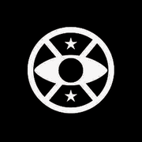

Así se ve incrustado en una web ajena — tocá play, suena de verdad
No te pierdas el lineup más pesado del año. Mientras reservás tus entradas, escuchá la radio oficial del festival en vivo:

Entradas disponibles en la preventa exclusiva. ¡Nos vemos en el foso! 🤘
El que lo pega en su web ve tu player con la música EN VIVO y metadata actualizada — igual que Spotify. Compacto: agregá ?compact=1 a la URL y height 88.
Spotify → Compartir → Copiar enlace del álbum → lo pega en el panel → la cajita de publicidad muestra su mini player. Tu sistema es idéntico: tu embed.html es tu "enlace compartible".